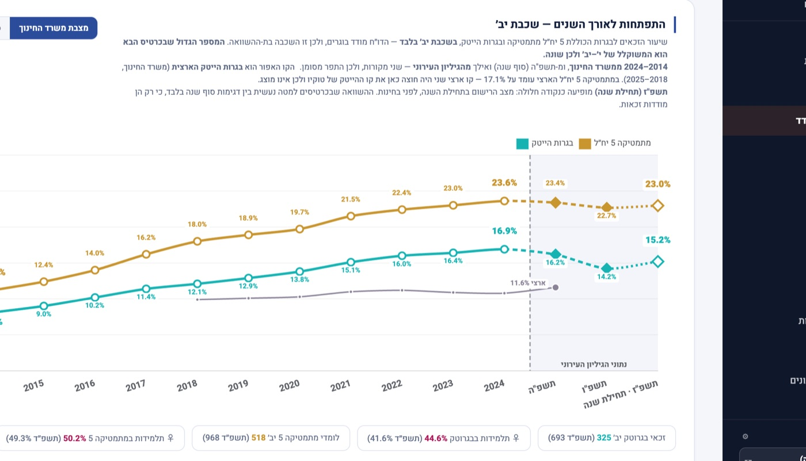
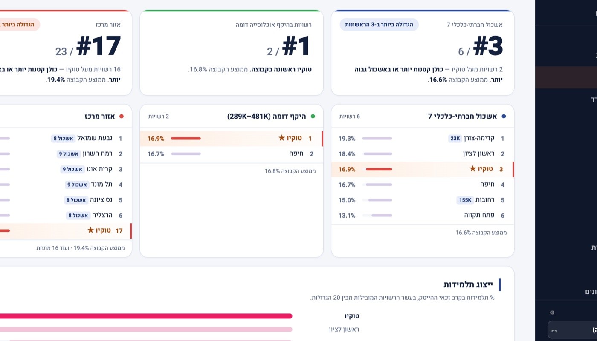

מטרה אחת: להעלות את מדד בגרות-הטק של העיר.
מדד בגרות-טק הוא שיעור הבוגרים שסיימו 5 יח"ל מתמטיקה, 5 יח"ל אנגלית, ופיזיקה או מדעי המחשב. משרד החינוך מפרסם אותו לכל רשות פעם בשנה, ועליו ראש העיר נמדד.
המערכת קיימת כדי שאגף החינוך ינהל את המספר הזה במהלך השנה, ולא יקבל אותו בדיעבד: לראות מי בדרך לזכאות, איפה תלמידים נופלים מהמסלול, ומה צריך לעשות בכל בית ספר, לפני שהמחזור מסיים.
למה לנהל את המדד, ולא לחכות לו
המדד נקבע לאורך שלוש שנים, מהכניסה ל-י' ועד סיום יב', ומתפרסם רק שנה אחרי שהמחזור עזב. כל נקודת דגימה במערכת היא רגע שבו עוד אפשר להשפיע. נקודת הפרסום היא הרגע היחיד שבו כבר לא.
אותה הגדרה כמו במשרד החינוך, בלי פרשנות נוחה
ההגדרה קשיחה: שלושה רכיבים יחד, אצל אותו תלמיד. מי שלמד פיזיקה ברמת 4 יח"ל אינו נספר, וכך גם מי שירד למתמטיקה 4 יח"ל בכיתה יא'. רוב הדלף במדד קורה בדיוק בירידות האלה, ולא בכניסה.
הדשבורד לא ממציא הגדרה נוחה יותר. הוא לוקח את ההגדרה הרשמית, מחשב אותה מרישומי בתי הספר, ומציג לצדה גם את המכנה הרשמי של המשרד, כך שהמספר שיופיע בפרסום הבא כבר מוכר מראש.
ארבע שאלות שמנהלת אגף שואלת, ותשובה לכל אחת
מתי מחליטים
הזכאות נקבעת בשתי נקודות: בחירת המקצועות בכניסה ל-י', וההתמדה עד יב'. המערכת מודדת את שתיהן בכל שנה, בתחילתה ובסופה. ההחלטות מתקבלות כשהמחזור עוד פתוח.
מה אומרים למנהלי בתי הספר
המספר העירוני מפורק לבתי הספר לפי ההגדרה הרשמית. תרומתו של כל בית ספר, מגמתו מול השנה הקודמת, ומה נדרש ממנו בשנה הבאה, על שולחן אחד. השיחה מתנהלת על נתונים משותפים.
לאן הולך תקציב התגבור
כל חסם מכומת בתלמידים: כמה אובדים במעבר מ-ט' ל-י', כמה נושרים ממתמטיקה 5 יח"ל בין י' ל-יב', ובאילו בתי ספר. התקציב הולך למקום שבו הוא מוסיף זכאים, ואפשר להראות למה.
מה יהיה המספר בפרסום הבא
צפי למדד של שני המחזורים הבאים, מהתלמידים שכבר במסלול ולפי שיעורי ההתמדה שנמדדו ברשות. הפער ליעד של ראש העיר מנוהל לאורך השנה, מול הדירוג הארצי, ולא מתגלה ביום הפרסום.
המסכים
מתוך דשבורד ההדגמה. העיר, בתי הספר והמספרים בדויים. המבנה, ההגדרות והנתונים הארציים אמיתיים.




גיליון אחד. בלי ממשקים, בלי פרויקט מחשוב.
בית הספר ממלא טבלה אחת: כמה תלמידים רשומים לכל מקצוע, בכל שכבה, בנים ובנות. פעמיים בשנה, בתחילתה ובסופה. הנתונים האלה כבר קיימים אצל רכזי המקצועות.
הטבלה יושבת בגיליון Google של אגף החינוך, בבעלותו. הדשבורד קורא אותה בזמן טעינה, מחשב הכל בעצמו ולא שומר דבר. אין מסד נתונים, אין ממשק למנב"ס, אין הרשאות למשרד החינוך.
מרגע שהגיליון הראשון מלא, הדשבורד באוויר בתוך שבועות ספורים, עם הנתונים של הרשות.
| בית ספר | מקצוע | י׳ בנים | י׳ בנות | י׳ סה"כ |
|---|---|---|---|---|
| סאקורה | כמות תלמידים | 146 | 146 | 292 |
| סאקורה | מתמטיקה 5 יח׳ | 88 | 79 | 167 |
| סאקורה | אנגלית 5 יח׳ | 88 | 70 | 158 |
| סאקורה | פיזיקה 5 יח׳ | 79 | 52 | 131 |
| סאקורה | מדעי המחשב 5 יח׳ | 37 | 26 | 63 |
| סאקורה | זכאות למדד טק | 79 | 56 | 135 |
הצגת המערכת על נתוני הרשות, 45 דקות
נציג את הדשבורד על נתוני ההדגמה ונעבור על מה שנדרש כדי להריץ אותו אצלכם. מי שמגיע עם רישומי המקצועות של שלושה בתי ספר, רואה את המדד שלו כבר בפגישה.
המערכת פועלת ברשות גדולה במרכז הארץ ומשמשת את מינהל החינוך מול ראש העיר ומול מנהלי בתי הספר.